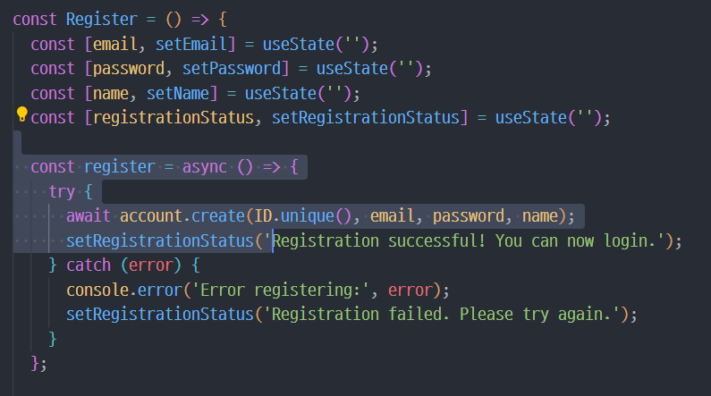
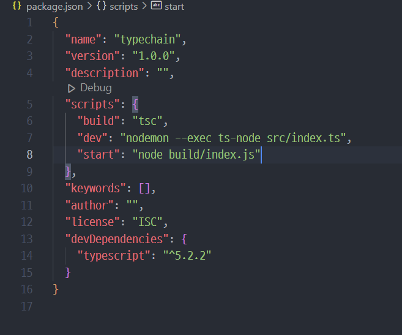
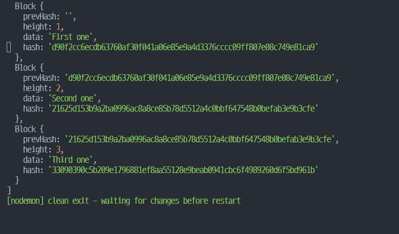

에꼴 소개
에꼴 소개
에꼴프로젝트 강의는 캡스톤디자인과정으로 개설 된 교과목입니다.
본 강의는 프랑스에서 운영중인 소프트웨어 개발 혁신강의로 평가받는 에꼴42(ecole42) 교육과정을 대학 교육과정에 접목하여 운영중인 캡스톤디자인 과목입니다. 단일 교과목 12학점이 편성되어 있고 격주로 수업이 진행되며, 총 8회에 거쳐 과정이 진행됩니다. 에꼴42(ecole 42)과정의 특징은 교수, 교재, 교육비가 없이 동료학습을 통해 매 주차 목표를 수행하여 최종 프로젝트를 진행하는 형태로 구성되어 있습니다. 이러한 특징을 정규 교과에 반영하기 위해 에꼴캡스톤 과정은 격주 오후 2시에 첫 세션을 시작으로 저녁 세션, 최종 세션을 종료한 후 결과 발표를 진행하고 강의가 종료되는 무박 2일의 해커톤 형태로 진행되며, 각 섹션별로 휴식시간과 석식, 야식이 제공됩니다. 각 회차 강의는 3가지 세션으로 나뉘어져 현업중심 강의, 특강, 실습 등으로 진행되며, 4분의 교수님께서 본 과목을 진행합니다. 일반적인 교과과정의 내용을 바탕으로 실무 중심적인 테크닉을 풀어서 세션을 진행하고 현업에서 활동 중인 특강자를 모시고 현장의 이야기를 경험할 수 있는 특별한 과정이기도 합니다. 모든 참가학생은 세션에 따른 회차별 과제를 수행하고, 이를 바탕으로 최종 개인 프로젝트까지 진행하도록 프로그램을 구성하였습니다. 캡스톤디자인 과정은 학생이 스스로 프로젝트를 구성하고 진행하는데 중점을 둔 교육 과정으로 학생 스스로 성장하는 수업이 될 수 있도록 진행됩니다.
경성대학교
프로젝트
ICT 인프라 구축


오픈소스 Web 기초
오픈소스 Web 활용
Backend 서비스 구축
Login Main Page
사용자에게 Email,Password,Name 입력 받아서 계정 생성
사용자에게 email,password 입력 받아서 로그인
ICT 서비스 Deploy
TypeScript를 이용한 블록체인 클론코딩
TypeScript와 JavaScript
- 1.타입스크립트는 자바스크립트와 다르게 컴파일 언어이다.
- 2.정적 타입 언어여서 컴파일 시간이 걸리지만 안정성이 보장된다.
- 3.반면 자바스크립트는 동적 타입 언어여서 런타임 속도는 빠르지만 안정성이 떨어진다.
- 4.타입스크립트를 컴파일하면 자바스크립트로 변환이 된 후 실행이 된다.
- 5.타입스크립트는 class와 interface의 특징을 지원함으로서 객체지향 프로그래밍 환경을 제공한다.
TypeScript 프로젝트 생성하는법
- 1.프로젝트 폴더를 만든다.
- 2.프로젝트 폴더 안에서 npm init -y 명령어로 package.json을 만든다. 
- 3.npm install -D typescript 명령어로 devDependencies에 typescript를 설치한다.
- 4.src 폴더 생성 후 작업할 index.ts 파일을 생성한다.
- 5.touch tsconfig.json을 만든다.(이 파일 있으면 vscode에서 내가 typescript로 작업을 하고 있다는걸 알게되면서, 자동완성기능을 제공한다.)
- 6.tsconfig.json파일에 "outDir": "build" 코드를 추가해서 변환될 javascript 파일이 생성될 디렉토리를 지정해준다.
BlockChain 코드

BlockChain이 반영된 블록 결과
BlockChain의 취약점을 노린 코드
새로운 블록을 push 할때 this.blocks으로 바로 리턴이 돼서 외부에서 원래 데이터와 관계없는 블록을 생성할 수 있다.
취약점이 노출된 BlockChain의 결과
취약점을 보완한 코드
기존에는 this.blocks로 리턴이 됐지만, 코드를 수정하면서 getBlock 함수의 리턴값을 아예 새로운 블록으로 리턴시킴으로써 관련없는 블록 추가를 막았다.
취약점을 보완한 코드
멤버

손정호 교수
- 구분 : 교수
- 소속 : LINK3.0
- 세션 : 에꼴프로젝트, 공유경제플랫폼, 빅데이터플랫폼, 오픈소스플랫폼
오정민
- 구분 : 참여학생
- 소속 : 소프트웨어학과
- 세션 : 에꼴프로젝트

임대원
- 구분 : 참여학생
- 소속 : 소프트웨어학과
- 세션 : 에꼴프로젝트

윤진수
- 구분 : 참여학생
- 소속 : 소프트웨어학과
- 세션 : 에꼴프로젝트

오영석
- 구분 : 참여학생
- 소속 : 소프트웨어학과
- 세션 : 에꼴프로젝트
성백준
- 구분 : 참여학생
- 소속 : 소프트웨어학과
- 세션 : 에꼴프로젝트

박현수
- 구분 : 참여학생
- 소속 : 소프트웨어학과
- 세션 : 에꼴프로젝트

박광훈
- 구분 : 참여학생
- 소속 : 소프트웨어학과
- 세션 : 에꼴프로젝트
김민조
- 구분 : 참여학생
- 소속 : 소프트웨어학과
- 세션 : 에꼴프로젝트
김성영
- 구분 : 참여학생
- 소속 : 소프트웨어학과
- 세션 : 에꼴프로젝트
이은정
- 구분 : 참여학생
- 소속 : 소프트웨어학과
- 세션 : 에꼴프로젝트

이가영
- 구분 : 참여학생
- 소속 : 소프트웨어학과
- 세션 : 에꼴프로젝트
김이레
- 구분 : 참여학생
- 소속 : 소프트웨어학과
- 세션 : 에꼴프로젝트

이꽃별
- 구분 : 멘토
- 소속 : 굿웹플
- 세션 : 에꼴프로젝트
최동한
- 구분 : 초빙교수
- 소속 : 소프트웨어학과
- 세션 : 에꼴프로젝트
김주현
- 구분 : 초빙교수
- 소속 : 소프트웨어학과
- 세션 : 에꼴프로젝트
성낙운
- 구분 : 초빙교수
- 소속 : 소프트웨어학과
- 세션 : 에꼴프로젝트